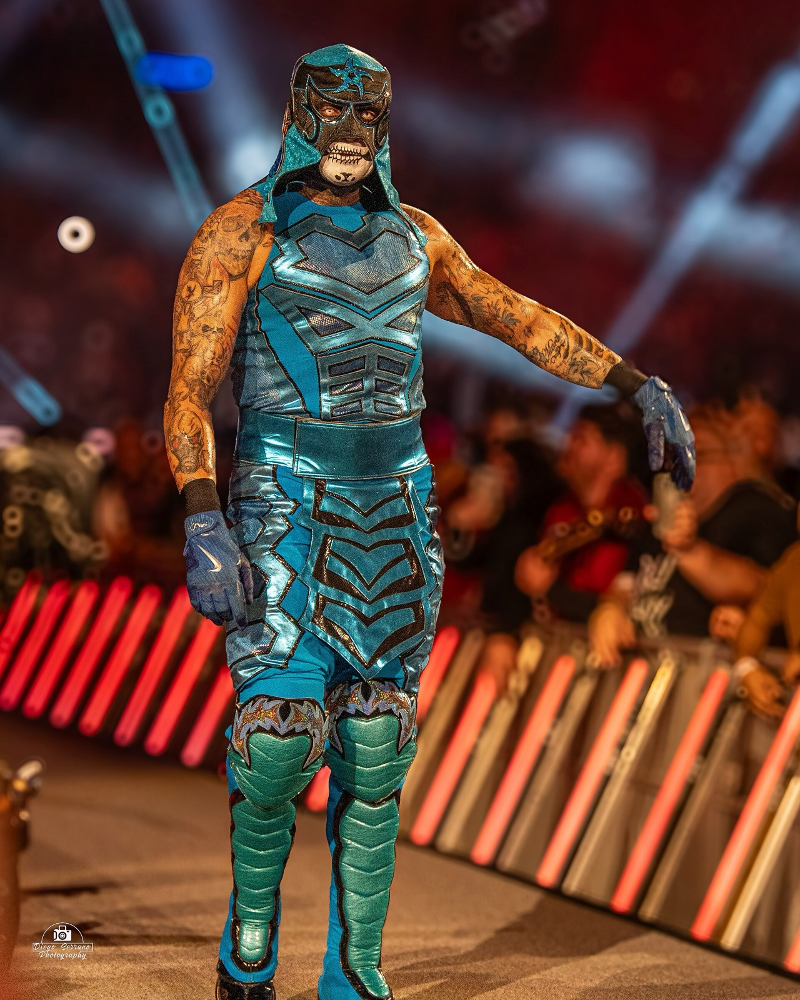

Penta e il Money in the Bank 2026: non doveva vincere lui, ecco cosa ha cambiato i piani
Penta ha vinto il Money in the Bank 2026, ma secondo WrestleVotes fino a poco prima il vincitore doveva essere un altro. A far cambiare idea alla WWE è stato il match contro Roman Reigns a Città del Messico. E sulla scala, il momento più folle l'hanno firmato Bron Breakker e Je'Von Evans.
Foto in copertina: Diego Serrano, CC BY 2.0, via Wikimedia Commons
Penta ha vinto il Money in the Bank 2026. Ma secondo i report non doveva vincerlo lui.
È la notizia del mio short. E la storia dietro questa valigetta è più interessante di quanto sembri.
Penta al Money in the Bank: com'è andata
10 ottobre 2026, New Orleans. Nel ladder match maschile ci sono Penta, Bron Breakker, CM Punk, Kevin Owens, Je'Von Evans e Trick Williams.
Penta, tra l'altro, nel match non doveva nemmeno esserci: è entrato nelle qualificazioni al posto di Solo Sikoa, rapito dai 946 nel backstage. Poi ha battuto Dominik Mysterio e Dragon Lee.
Il finale è suo: Mexican Destroyer a Breakker da una scala su un'altra scala, poi la salita e la valigetta staccata. Davanti a un pubblico che lo voleva.
"Non doveva vincere lui"
Ed ecco il retroscena. Secondo WrestleVotes, ad agosto, ai tempi di SummerSlam, Penta non era tra i favoriti nei piani della WWE per il Money in the Bank. E fino a pochissimo tempo prima dell'evento il vincitore previsto era un altro.
Chi? Secondo False Finish, il nome era quello di Bron Breakker, che era anche il favorito dei bookmaker. Sono voci, la WWE ovviamente non le ha confermate. Ma il quadro torna.
Cosa ha cambiato tutto: Città del Messico
Il 14 settembre 2026, a Raw da Città del Messico, Penta sfida Roman Reigns per il World Heavyweight Championship. A casa sua, davanti alla sua gente.
Reigns vince con la spear, ma Penta ci va vicinissimo dopo un Mexican Destroyer dalla corda. E secondo WrestleVotes quella prestazione ha fatto girare tante teste dietro le quinte: molti nel team creativo vorrebbero perfino una rivincita. Da lì la dirigenza si è convinta. La valigetta è sua.
Tutta la sua storia, da Dark Dragon alla WWE, te l'ho raccontata in La vera storia di Penta.
Il vero protagonista della scala: l'ambulanza
Occhio però a chi si è preso la scena. Il momento più folle del match l'hanno firmato Bron Breakker e Je'Von Evans.
Prima Breakker colpisce Evans con una spear attraverso le barricate, ed Evans viene portato via in barella e in ambulanza. Poi però torna, guidando proprio l'ambulanza fino a bordo ring. E alla fine Breakker lo spinge giù da una scala altissima: Evans vola fuori dal ring e sfonda il tetto dell'ambulanza.
Dopo lo show Triple H ha detto solo che Evans era con lo staff medico. E pochi giorni dopo, a Raw, l'abbiamo rivisto in azione proprio con quella valigetta in mano, come ti racconto nei risultati di Raw del 19 ottobre.
Dove incassa Penta?
Adesso Penta può incassare quando vuole. I bersagli sono due: Roman Reigns, campione del mondo dei pesi massimi, e Sami Zayn, campione WWE.
Nello short vi ho detto cosa ha risposto lui alla domanda in conferenza stampa: solo che sarà una grande sorpresa.
Io dico Reigns. Il conto aperto da Città del Messico è troppo bello per non chiuderlo, e un incasso di Penta su Roman sarebbe la chiusura perfetta della storia. Ma con uno che si chiama Zero Miedo, non escluderei niente.
Voi dove lo fareste incassare? Scrivetemelo nei commenti dello short e iscrivetevi al canale Tony Wrestling. Segui le sue prossime mosse nella pagina di Penta e nelle Flash News.
Fonti:
- Short: Penta non doveva vincere (Tony Wrestling)
- WWE Rumors: Penta, Money in the Bank, Bleacher Report (report di WrestleVotes)
- Original WWE Money In The Bank 2026 winners revealed, WhatCulture (False Finish)
- Report: WWE creative plans may have shifted following Penta-Roman Reigns match on Raw, Wrestling Inc
- Je'Von Evans sent crashing through ambulance roof, Fightful
- WWE Money in the Bank 2026: men's Money in the Bank full match results, Sacnilk (partecipanti, qualificazioni, finale)
Domande frequenti
Penta doveva vincere il Money in the Bank 2026?
Secondo WrestleVotes no. Fino a SummerSlam, ad agosto, non era tra i favoriti nei piani della WWE e fino a poco prima dell'evento il vincitore previsto era un altro. Secondo False Finish era Bron Breakker. La WWE non lo ha mai confermato.
Cosa ha convinto la WWE a far vincere Penta?
Il match contro Roman Reigns per il World Heavyweight Championship a Raw, il 14 settembre 2026 a Città del Messico. Secondo i report la sua prestazione ha colpito molto la dirigenza.
Cosa è successo a Je'Von Evans a Money in the Bank?
Bron Breakker lo ha spinto giù da una scala, fuori dal ring, e Evans è finito attraverso il tetto di un'ambulanza parcheggiata a bordo ring. Già prima era stato portato via in barella dopo una spear di Breakker attraverso le barricate.